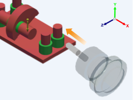

Orients the tool in the direction parallel to the X axis of the triad and pointing to the negative end of the X axis.
The Tool direction buttons enable you to set tool orientations for a milling operation. The tool direction is oriented with reference to the Global Coordinate System.
|
 |
You can select several tool directions for one milling configuration to allow for multi-sided machining.